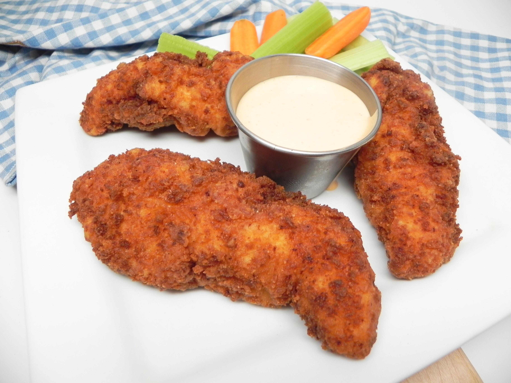

Ben's Buffalo Chicken Tenders

Description
These fried chicken tenders come out with a delicious restaurant-quality breading on the outside and juicy chicken on the inside. Eat them on their own with carrots, celery, and ranch or as a chicken sandwich!
Ingredients
- 2 cups of vegitable oil for frying, or as needed
- 1/2 cup of milk
- 1/4 cup of your prefered hot sauce (such as Frank's RedHot)
- 1 Large egg
- 1 Cup of all-purpose flour
- 1 Cup of Breadcrumbs
- Salt and ground black pepper to taste
- 1 (16 ounce) Package boneless, skinless chicken tenders
Steps
- Heat oil in a deep-fryer or large saucepan to 375 degrees F (190 degrees C).
- Combine milk, hot sauce, and egg in a small bowl. Combine flour, bread crumbs, salt, and pepper in a second bowl.
- Dredge chicken tenders in egg mixture, then in flour mixture.
- Fry in the hot oil until breading is crispy and chicken is no longer pink in the center and the juices run clear, 6 to 7 minutes. Pat dry on paper towels and let cool for 2 to 3 minutes before serving
Just like that you made Ben's Buffalo Chicken Tenders a reasturaunt Quality recipe is 4 easy steps